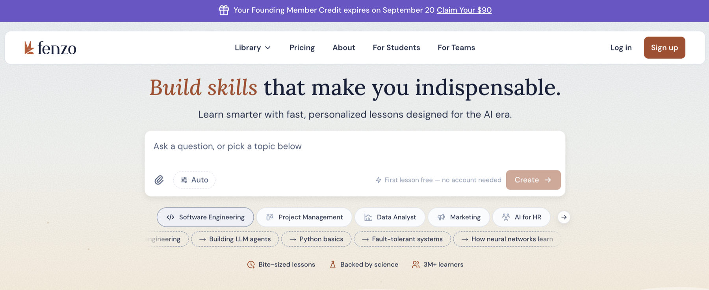
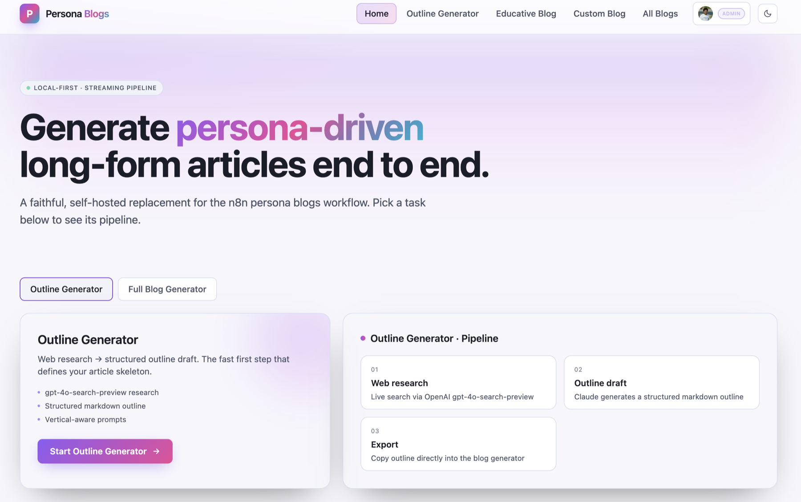

Get a real AI-native web platform — not a chatbot bolted onto a landing page. I build the full stack: a Next.js/React frontend, an AI layer orchestrated with LangChain across multiple LLM providers, and the API integrations that make it an actual product people use.
This is the same engineering behind Fenzo, an AI learning platform running ~100 orchestrated agents, and an internal AI content platform used daily by a technical content team — both LangChain-orchestrated web products, not internal scripts.
Ideal for: teams that need an AI feature to become a real product surface — logged-in users, a real UI, and a backend that can grow past a demo.
Full-stack builds — frontend, LangChain orchestration, and API integrations — not internal automations.

Fenzo — generates courses, guides, blogs, and flash cards on any topic via ~100 orchestrated agents.

AI content platform — generates technical articles with code, images, and charts, then publishes via API.
These are the factors that shape a proposal. Tell me which apply and I'll come back with a fixed-scope quote.
Next.js/React, TypeScript, and Tailwind — a real UI, not just an API endpoint.
LangChain / LangGraph, multi-provider routing across OpenAI, Claude, Gemini, and others.
CMS publishing, third-party APIs, webhooks, and auth (Google/OAuth) wired into the platform.
Streaming AI responses, live generation progress, and interactive output — code, charts, images.
From a handful of coordinated agents to production systems running at ~100-agent scale.
Model routing, caching, and per-stage checkpointing so it holds up past the demo.
Dashboards and internal tools so your team can operate the platform without a deploy.
Production hosting (Vercel/AWS), environment setup, and handover documentation.
What the AI needs to do, who it's for, and what "done" looks like as a real product, not a proof of concept.
I map the data flow, model routing, and API contracts, then send back a fixed-scope proposal with a clear price and timeline before any code is written.
Working builds you can click through regularly — including the AI behavior, not just the UI shell.
Production deployment, cost/latency tuning, documentation, and — where it's part of the scope — full source code, so your team owns it going forward.
Tell me what you're building and who it's for — I'll come back with a clear, fixed-scope proposal.